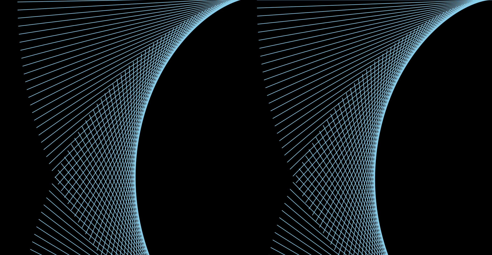

A Screensaver by definition is, "An animation or image that, after a set time, replaces an unchanging computer display."
My assignment was to code a screensaver for my Studio Interaction class that I am taking in the Spring of 2017.
My screensaver is inspired from the way DNA is formed in our bodies. I have tried to recreate the structure of DNA moving and taking different forms and shapes. I have used bright and neon colours, such as blues, pinks and reds that alternatly change colours to represent the transitions of the different forms it can take. I have tried to focus on keeping a flow within the structure.
